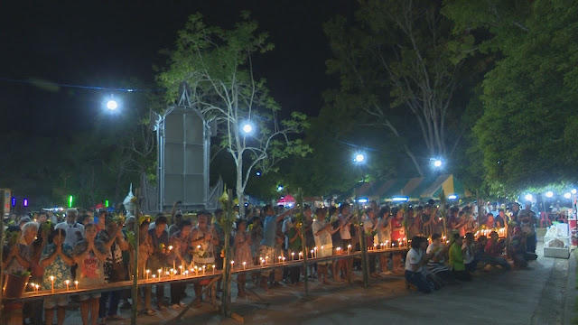

ประเพณีแก้บน ๑๐๐ ปี

ชาวบ้านในพื้นที่ตำบลหน้าถ้ำ อำเภอเมือง จังหวัดยะลา และพื้นที่ใกล้เคียงกว่าหนึ่งพันคน ได้เข้าร่วมพิธีแก้บนพ่อท่านบรรทมวัดคูหาภิมุขยะลา (วัดหน้าถ้ำ) สิ่งศักดิ์สิทธิ์ที่ชาวตำบลหน้าถ้ำ ชาวจังหวัดยะลาและประชาชนในพื้นที่ใกล้เคียงต่างเคารพนับถือ ตามประเพณีที่สืบทอดกันมากว่า 100 ปี
ซึ่งในพิธีมีการทำบุญทางศาสนาพุทธ การเล่นหนังตะลุงตัดเหมยแก้บน และการจุดประทัดเกือบแสนนัด เพื่อเป็นการแก้บนตามความเชื่อและความศรัทธาของชาวตำบลหน้าถ้ำ และประชาชนในจังหวัดยะลา โดยพิธีแก้บนก็จะเริ่มกันตั้งแต่ช่วงเช้ามีการเซ่นไหว้ 4 แห่ง คือ ไหว้เจ้าคุณพุทธไสยารักษ์ ไหว้พ่อทวด ไหว้พ่อท่านเจ้าเขา และไหว้พ่อท่านบรรทม หรือ พระพุทธไสยาสน์ พอในช่วงค่ำก็จะมีพิธีสงฆ์ รับหนังตะลุงมาเล่นกัน 3 คืน ในสมัยก่อนจะมีทั้งมโนราห์และหนังตะลุง ราคาไม่แพง หนังตะลุงแค่พันสองพัน แต่ปัจจุบันจะเป็นการเล่นหนังตะลุงอย่างเดียว เนื่องจากการจ้างหนังตะลุงในแต่ละคืนจะมีราคาสูงถึง 3 หมื่นบาท ส่วนการแก้บนก็จะทำกันปีเว้นปี ในช่วงข้างขึ้นของเดือน 6 อธิกมาส
ซึ่งหลังทำพิธีสงฆ์เสร็จเรียบร้อย ชาวบ้านก็จะนำธูปเทียนดอกไม้มาปักไว้ที่บริเวณด้านหน้าเขา เพื่อประกาศว่าวันนี้ทุกคนได้มาแก้บนแล้ว จากนั้น หนังตะลุงก็จะเริ่มเล่นตัดเหมยแก้บน เพื่อให้สิ่งที่บนบานหายไป โดยนำหนังตะลุงมาแก้แล้ว และจะมีการจุดประทัด รวมทั้งการยิงปืนแก้บนนับพันนัด ซึ่งสมัยก่อนจะใช้อาวุธสงครามในการยิง เสียงดังสนั่นหวั่นไหวไปทั่วทั้งเขา ใช้เวลานานมาก ปัจจุบันได้มีมาตรการไม่ให้นำอาวุธปืนสงครามมายิง ชาวบ้านก็ได้แก้ไขโดยจะใช้ปืนสั้น ปืนลูกซอง 5 นัดมายิง โดยจะมีเจ้าหน้าที่ตำรวจ ทหาร จัดสถานที่จุดยิงปืนแก้บน และคอยดูแลเพื่อความปลอดภัย โดยจะใช้เวลาในการยิงปืนแก้บนประมาณ 30 นาที ถึงจะเสร็จ
หลังจากครบ 3 คืน ที่นำหนังตะลุงมาเล่นแก้บนแล้ว ชาวบ้านก็จะขึ้นไปบนบานพ่อท่านบรรทมใหม่อีก โดยปีถัดไปก็จะนำหนังตะลุงมาเล่นแก้บนอีก จะสลับกันไปปีเว้นปี ทั้งนี้ สิ่งที่ทำวันนี้ คือ สิ่งที่ดีของคนหน้าถ้ำที่คิดและยึดถือปฎิบัติสืบทอดประเพณีกันมา เป็นสิ่งซึ่งยึดเหนี่ยวจิตใจของชาวพุทธในพื้นที่ ทั้งชาวตำบลหน้าถ้ำ ชาวจังหวัเยะลา ช่วยบรรเทาความทุกข์ด้านจิตใจในทางที่ถูกต้อง และยึดถือปฎิบัติมาจนถึงปัจจุบัน
ย้อนกลับ